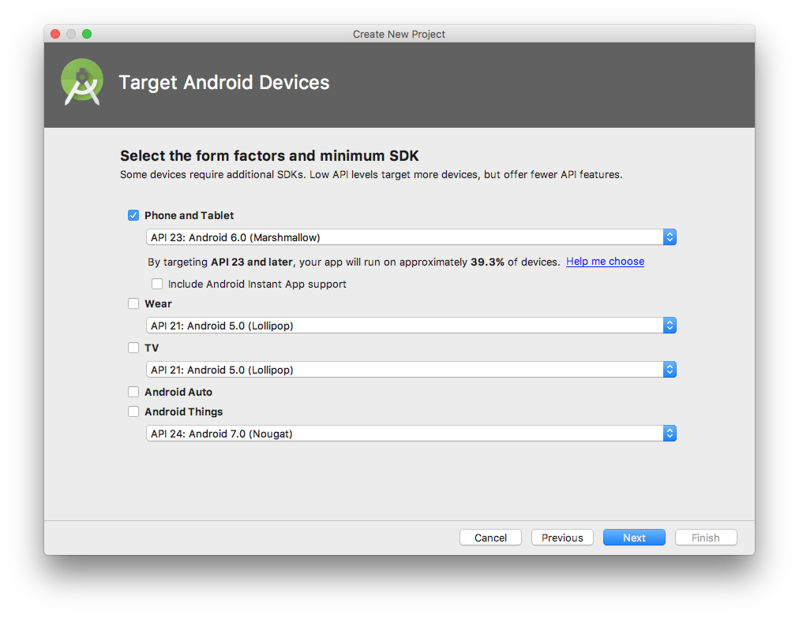
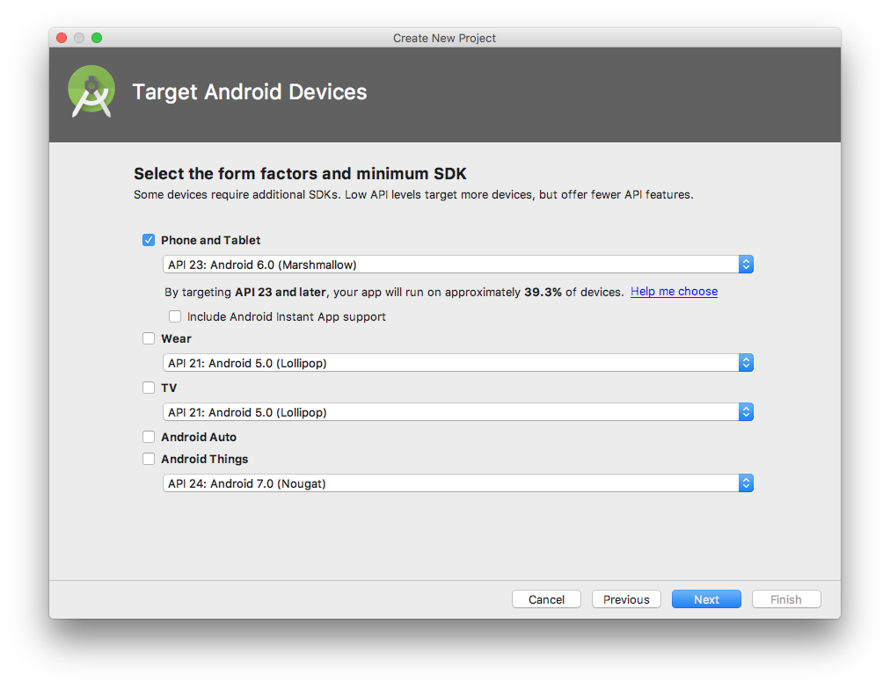
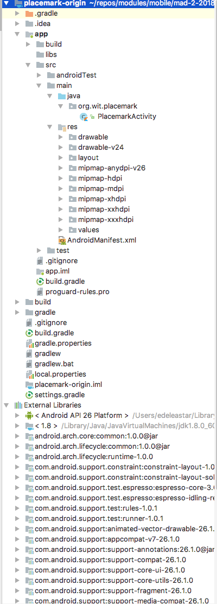
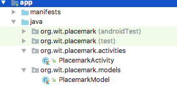

Objectives
Build a new Android application consisting of a single activity + layout.
Setup
Download and install the latest Android Studio (3.1.4 when this lab was updated last).
Indentation Levels
Run studio - and change the code settings to use tab size = 2, indent = 2 and continuation indent = 4 for Kotlin:

Do the same for XML, Groovy, Java and JSON.
New Project
Create an new Android project with the following key characteristics:
- Kotlin
- Single 'Blank' activity
Follow the structure and paramaters outlined here:
 



Your project should look like this:

Run
Make sure you can build and run the project. When you first attempt to run the app, you will be asked to create a Virtual Machine. You might create a VM configured like this:

Which will appear in a list of VMs like this:

The version, size and resolution are a reasonable compromise.
If it launches successfully, if should look like this in the VM:

.gitignore
If you are using git, you might want to make the following small adjustments to the generated .gitignore file:
*.iml
.gradle
/local.properties
/.idea
.DS_Store
/build
/captures
.externalNativeBuild(we are excluding all .idea files)
If you are using git, it is a good idea to commit the project to a repository now.
Key Project Files & Resources
Although the project structure looks daunting, there are only a small number of source files to work with regularly:
Find each of these files now (there are presented here without filenames)
package org.wit.placemark
import android.support.v7.app.AppCompatActivity
import android.os.Bundle
class PlacemarkActivity : AppCompatActivity() {
override fun onCreate(savedInstanceState: Bundle?) {
super.onCreate(savedInstanceState)
setContentView(R.layout.activity_placemark)
}
}<?xml version="1.0" encoding="utf-8"?>
<manifest xmlns:android="http://schemas.android.com/apk/res/android"
package="org.wit.placemark">
<application
android:allowBackup="true"
android:icon="@mipmap/ic_launcher"
android:label="@string/app_name"
android:roundIcon="@mipmap/ic_launcher_round"
android:supportsRtl="true"
android:theme="@style/AppTheme">
<activity android:name=".PlacemarkActivity">
<intent-filter>
<action android:name="android.intent.action.MAIN"/>
<category android:name="android.intent.category.LAUNCHER"/>
</intent-filter>
</activity>
</application>
</manifest>
apply plugin: 'com.android.application'
apply plugin: 'kotlin-android'
apply plugin: 'kotlin-android-extensions'
android {
compileSdkVersion 28
defaultConfig {
applicationId "wit.org.placemark"
minSdkVersion 23
targetSdkVersion 28
versionCode 1
versionName "1.0"
testInstrumentationRunner "android.support.test.runner.AndroidJUnitRunner"
}
buildTypes {
release {
minifyEnabled false
proguardFiles getDefaultProguardFile('proguard-android.txt'), 'proguard-rules.pro'
}
}
}
dependencies {
implementation fileTree(dir: 'libs', include: ['*.jar'])
implementation "org.jetbrains.kotlin:kotlin-stdlib-jdk7:$kotlin_version"
implementation 'com.android.support:appcompat-v7:28.0.0-rc01'
implementation 'com.android.support.constraint:constraint-layout:1.1.2'
testImplementation 'junit:junit:4.12'
androidTestImplementation 'com.android.support.test:runner:1.0.2'
androidTestImplementation 'com.android.support.test.espresso:espresso-core:3.0.2'
}<?xml version="1.0" encoding="utf-8"?>
<android.support.constraint.ConstraintLayout
xmlns:android="http://schemas.android.com/apk/res/android"
xmlns:app="http://schemas.android.com/apk/res-auto"
xmlns:tools="http://schemas.android.com/tools"
android:layout_width="match_parent"
android:layout_height="match_parent"
tools:context="org.wit.placemark.PlacemarkActivity">
<TextView
android:layout_width="wrap_content"
android:layout_height="wrap_content"
android:text="Hello World!"
app:layout_constraintBottom_toBottomOf="parent"
app:layout_constraintLeft_toLeftOf="parent"
app:layout_constraintRight_toRightOf="parent"
app:layout_constraintTop_toTopOf="parent"/>
</android.support.constraint.ConstraintLayout><resources>
<string name="app_name">Placemark</string>
</resources><resources>
<!-- Base application theme. -->
<style name="AppTheme" parent="Theme.AppCompat.Light.DarkActionBar">
<!-- Customize your theme here. -->
<item name="colorPrimary">@color/colorPrimary</item>
<item name="colorPrimaryDark">@color/colorPrimaryDark</item>
<item name="colorAccent">@color/colorAccent</item>
</style>
</resources>The files are (in order of appearence)
- app/src/main/java/org/wit/placemark/PlacemarkActivity.kt
- app/src/main/AndroidManifest.xml
- app/build.gradle
- app/src/main/res/layout/activity_placemark.xml
- app/src/main/res/values/strings.xml
- app/src/main/res/values/styles.xml
Locate all of these files in the Android Studio 'Android' perspective:
and in the 'Project' perspective:

and using Finder/Explorer:

As you gain experience in android - the role and purpose of each of these files will become clearer.
Theme & Layout Libraries
Before proceeding to introduce new features into our app - we will augment some of the libraries:
build.gradle
...
implementation 'com.android.support:design:28.0.0-rc02'
...Make sure you include the above in the correct build.gradle file (there are two). Append it to the other implementation entries. When you make the above change you will be invited to sync the project again - do this now.
This is an additional library to support android components and layouts not included in the base SDK:
Also, change our theme:
styles.xml
<style name="AppTheme" parent="Theme.AppCompat.Light.NoActionBar">This replaces the 'DarkActionBar' theme in the generated style
Now change the colours:
colours.xml
<?xml version="1.0" encoding="utf-8"?>
<resources>
<color name="colorPrimary">#FFFFFF</color>
<color name="colorPrimaryDark">#000000</color>
<color name="colorAccent">#4c90af</color>
</resources>Or choose other colours as you please...
activity_placemark Layout
Working with activity_placemark.xml, progressively introduce the following versions - replacing each with the successive content below. Keep an eye on the design view as you progress to notice the changes

activity_placemark.xml Version A
This is what you currently have (select the Text view to reveal this):
<?xml version="1.0" encoding="utf-8"?>
<android.support.constraint.ConstraintLayout
xmlns:android="http://schemas.android.com/apk/res/android"
xmlns:app="http://schemas.android.com/apk/res-auto"
xmlns:tools="http://schemas.android.com/tools"
android:layout_width="match_parent"
android:layout_height="match_parent"
tools:context="org.wit.placemark.PlacemarkActivity">
<TextView
android:layout_width="wrap_content"
android:layout_height="wrap_content"
android:text="Hello World!"
app:layout_constraintBottom_toBottomOf="parent"
app:layout_constraintLeft_toLeftOf="parent"
app:layout_constraintRight_toRightOf="parent"
app:layout_constraintTop_toTopOf="parent"/>
</android.support.constraint.ConstraintLayout>activity_placemark.xml Version B
Now make tee following change ... replace the current contents to include relative layout + toolbar
<?xml version="1.0" encoding="utf-8"?>
<android.support.constraint.ConstraintLayout
xmlns:android="http://schemas.android.com/apk/res/android"
xmlns:app="http://schemas.android.com/apk/res-auto"
xmlns:tools="http://schemas.android.com/tools"
android:layout_width="match_parent"
android:layout_height="match_parent"
tools:context="org.wit.placemark.PlacemarkActivity">
<RelativeLayout
android:layout_width="match_parent"
android:layout_height="wrap_content">
<android.support.design.widget.AppBarLayout
android:id="@+id/appBarLayout"
android:layout_width="match_parent"
android:layout_height="wrap_content"
android:background="@color/colorAccent"
android:fitsSystemWindows="true"
app:elevation="0dip"
app:theme="@style/ThemeOverlay.AppCompat.Dark.ActionBar">
<android.support.v7.widget.Toolbar
android:id="@+id/toolbarAdd"
android:layout_width="match_parent"
android:layout_height="wrap_content"
app:titleTextColor="@color/colorPrimary"/>
</android.support.design.widget.AppBarLayout>
</RelativeLayout>
</android.support.constraint.ConstraintLayout>Keep an eye on the Design view as you make this change.
activity_placemark.xml Version C
... augment with a scroll view containing a linear layout:
<?xml version="1.0" encoding="utf-8"?>
<android.support.constraint.ConstraintLayout
xmlns:android="http://schemas.android.com/apk/res/android"
xmlns:app="http://schemas.android.com/apk/res-auto"
xmlns:tools="http://schemas.android.com/tools"
android:layout_width="match_parent"
android:layout_height="match_parent"
tools:context="org.wit.placemark.PlacemarkActivity">
<RelativeLayout
android:layout_width="match_parent"
android:layout_height="wrap_content">
<android.support.design.widget.AppBarLayout
android:id="@+id/appBarLayout"
android:layout_width="match_parent"
android:layout_height="wrap_content"
android:background="@color/colorAccent"
android:fitsSystemWindows="true"
app:elevation="0dip"
app:theme="@style/ThemeOverlay.AppCompat.Dark.ActionBar">
<android.support.v7.widget.Toolbar
android:id="@+id/toolbarAdd"
android:layout_width="match_parent"
android:layout_height="wrap_content"
app:titleTextColor="@color/colorPrimary"/>
</android.support.design.widget.AppBarLayout>
<ScrollView
android:layout_width="match_parent"
android:layout_height="match_parent"
android:layout_below="@id/appBarLayout"
android:fillViewport="true">
<LinearLayout
android:layout_width="match_parent"
android:layout_height="wrap_content"
android:orientation="vertical">
</LinearLayout>
</ScrollView>
</RelativeLayout>
</android.support.constraint.ConstraintLayout>activity_placemark.xml Version D
... scroll view linear layout contains a text edit field:
<?xml version="1.0" encoding="utf-8"?>
<android.support.constraint.ConstraintLayout
xmlns:android="http://schemas.android.com/apk/res/android"
xmlns:app="http://schemas.android.com/apk/res-auto"
xmlns:tools="http://schemas.android.com/tools"
android:layout_width="match_parent"
android:layout_height="match_parent"
tools:context="org.wit.placemark.PlacemarkActivity">
<RelativeLayout
android:layout_width="match_parent"
android:layout_height="wrap_content">
<android.support.design.widget.AppBarLayout
android:id="@+id/appBarLayout"
android:layout_width="match_parent"
android:layout_height="wrap_content"
android:background="@color/colorAccent"
android:fitsSystemWindows="true"
app:elevation="0dip"
app:theme="@style/ThemeOverlay.AppCompat.Dark.ActionBar">
<android.support.v7.widget.Toolbar
android:id="@+id/toolbarAdd"
android:layout_width="match_parent"
android:layout_height="wrap_content"
app:titleTextColor="@color/colorPrimary"/>
</android.support.design.widget.AppBarLayout>
<ScrollView
android:layout_width="match_parent"
android:layout_height="match_parent"
android:layout_below="@id/appBarLayout"
android:fillViewport="true">
<LinearLayout
android:layout_width="match_parent"
android:layout_height="wrap_content"
android:orientation="vertical">
<android.support.design.widget.TextInputEditText
android:id="@+id/placemarkTitle"
android:layout_width="match_parent"
android:layout_height="wrap_content"
android:layout_margin="8dp"
android:hint="@string/hint_placemarkTitle"
android:inputType="text"
android:maxLength="25"
android:maxLines="1"
android:padding="8dp"
android:textColor="@color/colorPrimaryDark"
android:textSize="14sp"/>
</LinearLayout>
</ScrollView>
</RelativeLayout>
</android.support.constraint.ConstraintLayout>The above needs a new string resource:
strings.xml
<resources>
<string name="app_name">Placemark</string>
<string name="hint_placemarkTitle">Placemark Title</string>
</resources>activity_placemark.xml Version E
... a new button in the layout
<?xml version="1.0" encoding="utf-8"?>
<android.support.constraint.ConstraintLayout
xmlns:android="http://schemas.android.com/apk/res/android"
xmlns:app="http://schemas.android.com/apk/res-auto"
xmlns:tools="http://schemas.android.com/tools"
android:layout_width="match_parent"
android:layout_height="match_parent"
tools:context="org.wit.placemark.PlacemarkActivity">
<RelativeLayout
android:layout_width="match_parent"
android:layout_height="wrap_content">
<android.support.design.widget.AppBarLayout
android:id="@+id/appBarLayout"
android:layout_width="match_parent"
android:layout_height="wrap_content"
android:background="@color/colorAccent"
android:fitsSystemWindows="true"
app:elevation="0dip"
app:theme="@style/ThemeOverlay.AppCompat.Dark.ActionBar">
<android.support.v7.widget.Toolbar
android:id="@+id/toolbarAdd"
android:layout_width="match_parent"
android:layout_height="wrap_content"
app:titleTextColor="@color/colorPrimary"/>
</android.support.design.widget.AppBarLayout>
<ScrollView
android:layout_width="match_parent"
android:layout_height="match_parent"
android:layout_below="@id/appBarLayout"
android:fillViewport="true">
<LinearLayout
android:layout_width="match_parent"
android:layout_height="wrap_content"
android:orientation="vertical">
<android.support.design.widget.TextInputEditText
android:id="@+id/placemarkTitle"
android:layout_width="match_parent"
android:layout_height="wrap_content"
android:layout_margin="8dp"
android:hint="@string/hint_placemarkTitle"
android:inputType="text"
android:maxLength="25"
android:maxLines="1"
android:padding="8dp"
android:textColor="@color/colorPrimaryDark"
android:textSize="14sp"/>
<Button
android:id="@+id/btnAdd"
android:layout_width="match_parent"
android:layout_height="wrap_content"
android:layout_margin="16dp"
android:background="@color/colorAccent"
android:paddingBottom="8dp"
android:paddingTop="8dp"
android:stateListAnimator="@null"
android:text="@string/button_addPlacemark"
android:textColor="@color/colorPrimary"
android:textSize="16sp"/>
</LinearLayout>
</ScrollView>
</RelativeLayout>
</android.support.constraint.ConstraintLayout>A string resource for the button:
strings.xml
<string name="button_addPlacemark">Add Placemark</string>Building layouts textually like this is a useful skill to acquire over time. Initially, you will probably be most comfortable with drawing the layouts using the design view.
Make sure the application launches now - and the design view is presented in the running app

This short article on layouts is as useful primer:
Logging Event Handling in Kotlin
We are going to be working exclusively in Kotlin - not Java. This affords considerable improvements, largely around conciseness and expressiveness of code.
Logging
To prepare for this, include these additional dependencies in our gradle.build:
gradle.build
...
implementation 'org.jetbrains.anko:anko:0.10.5'
implementation 'org.jetbrains.anko:anko-commons:0.10.5'
...This library is documented here:
We will be progressively introducing some of its features as we evolve the application.
The first feature is a simple way of logging:
Change the class to include the 'AnkoLogger' feature:
PlacemarkActivity
..
class PlacemarkActivity : AppCompatActivity(), AnkoLogger {
...When you make this change, AnkoLogger will not be recognised - so you will need to import it. This can be triggered automatically (if you can figure this out). The correct import statement is:
import org.jetbrains.anko.AnkoLoggerThen, in our onCreate() method, try it out:
...
info("Placemark Activity started..")
...Again, this will require an import - which will be this:
import org.jetbrains.anko.infoTry to figure out the key strokes required to generate this...
Now, make sure you can run the app and see this log in the 'Logcat' view in Studio:

Do not proceed further until you can locate something like the above in Logcat. The logss are a bit noisy, and may contain what look like errors. However, buried in there should be your message.
This style of logging is discussed here:
Event Handling
Now include the following inside the onCreate function:
btnAdd.setOnClickListener() {
info("add Button Pressed")
}Introducing this will require additional imports - get used to selecting these as prompted by Studio. On this occasion you will be presented with a choice of imports:

We need to select the synthetic import.The complete class will look like this:
package org.wit.placemark
import android.support.v7.app.AppCompatActivity
import android.os.Bundle
import kotlinx.android.synthetic.main.activity_placemark.*
import org.jetbrains.anko.AnkoLogger
import org.jetbrains.anko.info
class PlacemarkActivity : AppCompatActivity(), AnkoLogger {
override fun onCreate(savedInstanceState: Bundle?) {
super.onCreate(savedInstanceState)
setContentView(R.layout.activity_placemark)
info("Placemark Activity started..")
btnAdd.setOnClickListener() {
info("add Button Pressed")
}
}
}Make sure you can run the app and that you can see the 'add button pressed' log.
Read this short blog post outlining how the above code differers from the traditional java implementation of same.
Try this alternative implementation of the event handler:
btnAdd.setOnClickListener() {
val placemarkTitle = placemarkTitle.text.toString()
if (placemarkTitle.isNotEmpty()) {
info("add Button Pressed: $placemarkTitle")
}
else {
toast ("Please Enter a title")
}
}Try it out and notice the difference - particularly if you press add without entering a title...
In the above we are using anko toasts:
Refactor
Refactor the application structure such that ActivityPlacemark is in a new package called 'org.wit.placemarks.activities':

You should be able to do this from within the Studio Android perspective. You will be using the context menu to create the new package in the java folder:

and then dragging/dropping the class into this new package. This will automatically trigger refactor step:

Once this is completed, a number of files will be automatically changed:
- AndroidManifest.xml
- PlacemarkActivity.kt
- activity_placemark.xml
See if you can locate each of the changes...
Models
Introduce a new package called 'models' as shown here:

... and bring in this new class:
PlacemarkModel
package org.wit.placemark.models
data class PlacemarkModel(var title: String = "")This is an example of a Kotlin Data class:
Briefly review the above - this is the official documentation:
Here is a new version of PlacemarkActivity that makes use of this model:
package wit.org.placemark.activities
import android.support.v7.app.AppCompatActivity
import android.os.Bundle
import kotlinx.android.synthetic.main.activity_placemark.*
import org.jetbrains.anko.AnkoLogger
import org.jetbrains.anko.info
import org.jetbrains.anko.toast
import org.wit.placemark.models.PlacemarkModel
import wit.org.placemark.R
class PlacemarkActivity : AppCompatActivity(), AnkoLogger {
var placemark = PlacemarkModel()
override fun onCreate(savedInstanceState: Bundle?) {
super.onCreate(savedInstanceState)
setContentView(R.layout.activity_placemark)
btnAdd.setOnClickListener() {
placemark.title = placemarkTitle.text.toString()
if (placemark.title.isNotEmpty()) {
info("add Button Pressed: $placemark")
}
else {
toast ("Please Enter a title")
}
}
}
}Read it carefully - notice how we are creating a placemark as a class member:
var placemark = PlacemarkModel()and then using it in the event handler:
btnAdd.setOnClickListener() {
placemark.title = placemarkTitle.text.toString()
if (placemark.title.isNotEmpty()) {
info("add Button Pressed: $placemark")
}
else {
toast ("Please Enter a title")
}
}Solution
Placemark application so far:
Exercise 1:
Download, expand and open in Studio the sample solution above. Run it in the emulator.
Exercise 2:
Make sure you can auto import the correct libraries when you introduce referenced. As an exercise, delete all of the imports from PlacemarkActivity:
package org.wit.placemark.activities
// deleted imports..
class PlacemarkActivity : AppCompatActivity(), AnkoLogger {
var placemark = PlacemarkModel()
override fun onCreate(savedInstanceState: Bundle?) {
super.onCreate(savedInstanceState)
setContentView(R.layout.activity_placemark)
info("Placemark Activity started..")
btnAdd.setOnClickListener() {
placemark.title = placemarkTitle.text.toString()
if (placemark.title.isNotEmpty()) {
info("add Button Pressed: $placemarkTitle")
}
else {
toast ("Please Enter a title")
}
}
}
}NOw reintroduce them one-by-one. Keep a close eye on any choices you make as you do this.
Exercise 3:
Create an ArrayList of Placemarks in PlacemarkActivity - and add each new placemark to this list.
Log all placemarks when a new one is entered.
HINT: Here is a simple placemark array declaration + creation:
val placemarks = ArrayList<PlacemarkModel>()This is the documentation on lists in general:
Greater emphasis is placed here on mutability - which we can explore at a later stage.
Exercise 4:
Create new text field description + log when entered. This will require you to:
- and a new field in the layout
- add a new entry in the strings.xml file
- expend the model
- recover the field in the event handler and include in the model objects
- log the new field